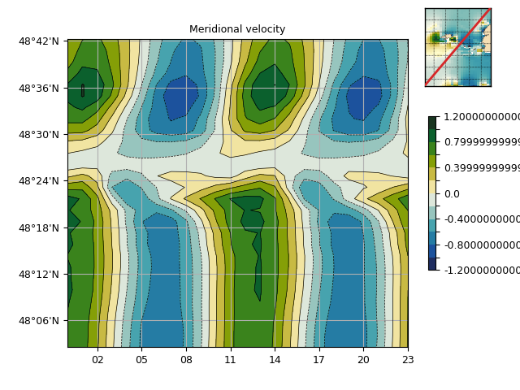

1.3.3.6.3.2.5. Interpolation de données grillées vers des positions aléatoires¶
Cette routine est particulièrement adaptée pour passer d’une grille rectangulaire vers une grille non structurée.
Voir : grid2xy().

Interpolation de données grillées vers des positions aléatoires.
# %% Imports
import cdms2, MV2, numpy as N, pylab as P
from vcmq import data_sample, grid2xy, hov, savefigs, map2
# %% Read data
select = dict(lon=(-5.3, -4.72), lat=(47.9, 48.8), time=slice(0, 24))
f = cdms2.open(data_sample('mars2d.xyt.nc'))
v = MV2.masked_values(f('v', **select), 0., copy=False)
f.close()
# %% Simple transect
lon = v.getLongitude()
lat = v.getLatitude()
nd = N.sqrt(len(lon)**2.+len(lat)**2)/2.
xo = N.linspace(lon[0], lon[-1], nd)
yo = N.linspace(lat[0], lat[-1], nd)
# %% Interpolation
vo = grid2xy(v, xo, yo, method='bilinear')
# %% Plot
# - interpolated data
hov(vo, cmap='cmocean_delta', show=False, top=.9, date_fmt='%H',
colorbar_shrink=.5, left=.13, colorbar_fraction=0.1,
title="Meridional velocity", fill='contourf', linewidth=.5)
# - map + trace
m = map2(v[0], xhide=True, yhide=True, contour=False,
title=False, autoresize=0, cmap='cmocean_delta',
colorbar=False, axes_rect=[.78, .78, .2, .2], show=False)
m.add_lines(xo, yo, color="C3", lw=2)
savefigs(__file__)
P.close()